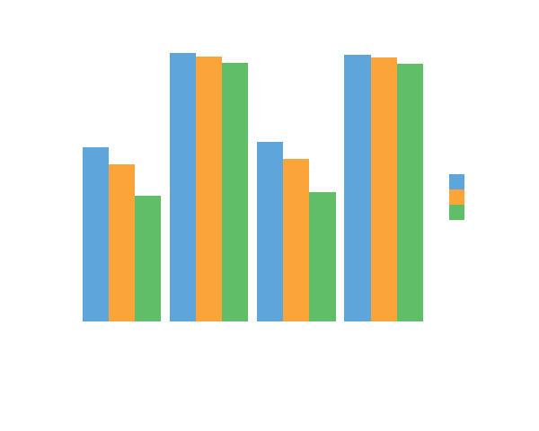

Predictive Models for Severe Sepsis in Adult ICU Patients
Joseph Guillén, Jiankun Liu, Margaret Furr, Tianyao Wang
Agenda
- Overview of severe sepsis
- Problem and objectives
- Models and results
- Conclusions and future research
Severe Sepsis Definition
- A syndrome of organ dysfunction in the setting of infection
- Accepted clinical definitions are imprecise and miss 1/8 cases
- High lactate concentration reflects organ hypoperfusion and is a quantitative method of determining mortality risk in sepsis
- Our definition is therefore: High lactate (>4 mmol/L) plus infection (blood culture acquisition)
Intervention

- Early time to antimicrobial therapy
- Early fluid resuscitation
- Vital and maximizing outcomes
CCM 2006:34:1589-96
Lactate Clearance
- Strongly associated with improved outcomes
- Delayed clearance indicative of organ dysfunction or continual shock
- More aggressive resuscitation for patients with high risk of delayed clearance
Objectives
- Build predictive models for the early detection of severe sepsis based on clinical data
- For patients classified as having severe sepsis, build predictive models for lactate clearance
Data
- Source:
MIMIC-II database -- contains comprehensive data for about 32,000 patients from multiple ICUs at the Beth Israel Deaconess Medical Center from 2001 to 2008.
- Cohort:
24 hours model: 3446
48 hours model: 2889
latate clearance: 938
Performance



Lactate Clearance Models